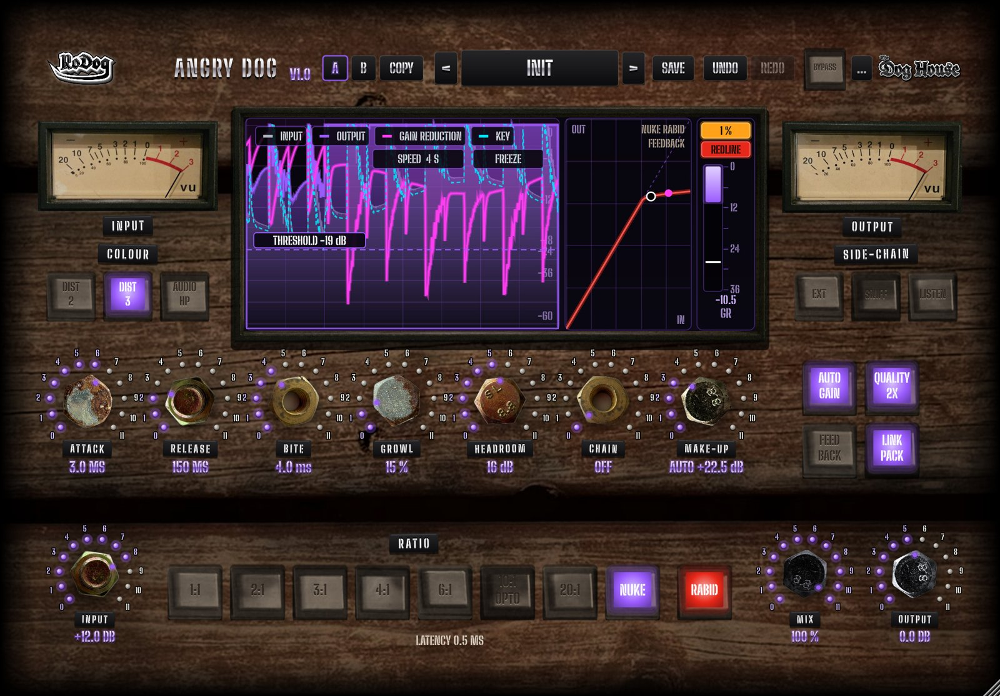
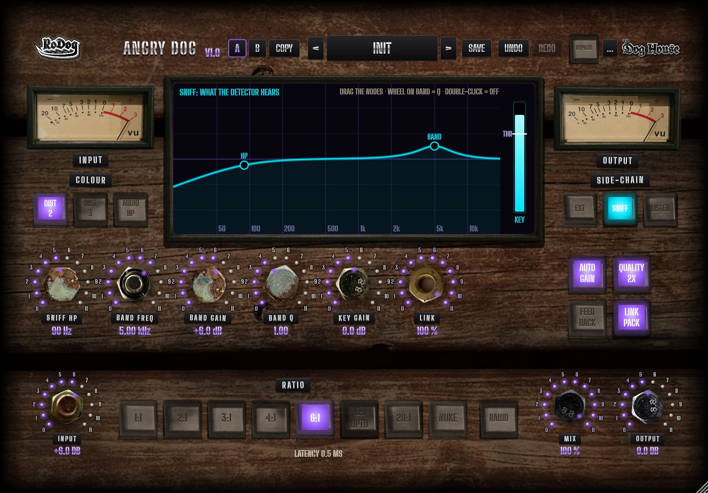
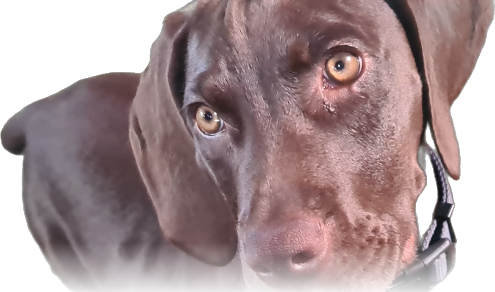

Angry Dog
A compressor with attitude, in the spirit of the famous Distressor, with a side chain that sniffs out exactly what you want it to react to.
Installs through the The Kennel. VST3 & AU, macOS & Windows.
Features
Eight ratios, eight characters
No threshold knob: each RATIO has its own threshold, knee and timing. 2:1 glues, 10:1 OPTO lets go like an optical leveller, NUKE is a brick wall. Drive it with INPUT and it bites harder.
RABID
The famous all-buttons-in trick, on any ratio. BITE and GROWL add more attitude when you want it.

Colour that never smears
DIST 2, DIST 3, GROWL and HEADROOM only add harmonics, which grow as it works harder.

SNIFF side chain
Filter the key with HP and BAND, use an external side chain, and listen to the key or the difference.
CHAIN and AUTO GAIN
CHAIN keeps the lows dry, AUTO GAIN takes the input back off at the output, and QUALITY runs it at 1x, 2x or 4x.
Pictures
More from the DrumDog series

Drum Dog
Everything a multitrack drum kit needs before the mix: level, align and trigger, on every drum track. Soon splitting into three DrumDog plugins: Dog Align, Dog Leveller and Dog Midi.

Hush Puppy
A dynamic high shelf that takes cymbal and hi-hat bleed off your drum mics and leaves the hits alone.

Big Dog
Big, fat drums: a shell clipper for kick, snare and toms, from gentle saturation to hard clipping. Formerly Shell Shock.
